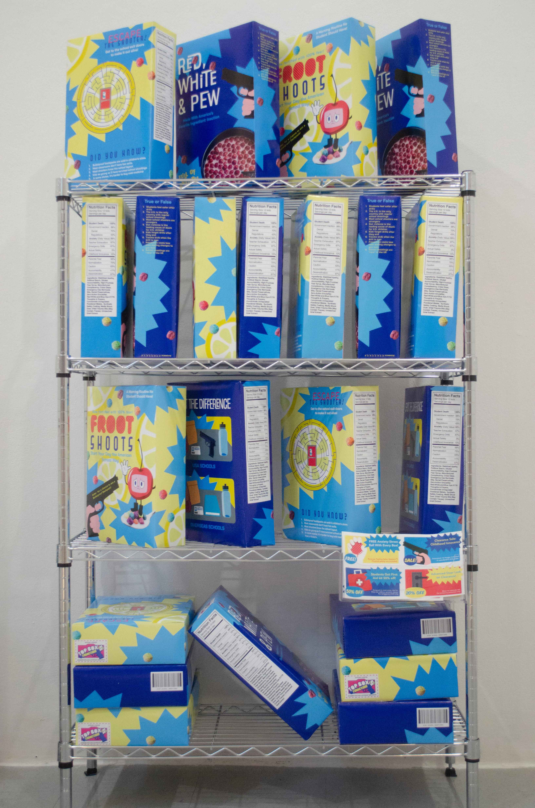

Aisle 12: School Safety is an installation that uses the familiar, comforting format of a cereal box to confront the disturbing normalization of gun violence in U.S. schools. By recreating a grocery store display, the project critiques how mass shootings and school safety drills have become embedded in the cultural “daily routine.” The work juxtaposes playful, commercial design with dark, sobering content to expose the unsettling contrast between childhood innocence and contemporary realities. The bright colors and cheerful graphics initially evoke nostalgia and comfort, but closer inspection reveals language that references preparedness, drills, and vigilance. This tension between appearance and meaning reflects the broader cultural dissonance surrounding school safety today.
At the center of the installation is a parody cereal box displayed on a grocery-style rack, positioned as though it were an everyday household staple. The title, Aisle 12, references the K–12 education system, suggesting that fear and over-preparedness now span a student’s entire academic journey, from kindergarten through graduation. The grocery aisle format reinforces the idea that school safety has become something “stocked,” standardized, and circulated like a consumer good, treated as a product to be purchased rather than a systemic issue to be resolved. The display mimics the visual strategies of corporate marketing: bold fonts promise reassurance, smiling graphics soften harsh realities, and promotional slogans advertise preparedness as if it were a desirable feature. By borrowing the language of advertising, the installation highlights how institutional responses to violence often emphasize visibility and reassurance over structural change.
Socially and culturally, the project addresses how gun violence in schools has shifted from a shocking anomaly to an anticipated possibility. Students grow up practicing emergency drills alongside fire drills, absorbing a heightened awareness of danger as part of their education. Politically, the installation critiques how responses to school violence frequently manifest as incremental, consumer-like “upgrades”—bulletproof backpacks, upped security, new protocols—rather than comprehensive gun reform. By presenting safety as a marketable commodity, the work questions whether reassurance has replaced resolution.
Through humor, irony, and visual familiarity, Aisle 12: School Safety invites viewers to reconsider how crisis becomes normalized when packaged attractively. The comforting design draws audiences in, only to confront them with the gravity of the issue. Ultimately, the installation asks: when safety is marketed like a product, what does that reveal about the culture that consumes it—and what might it take to remove it from the shelf altogether?